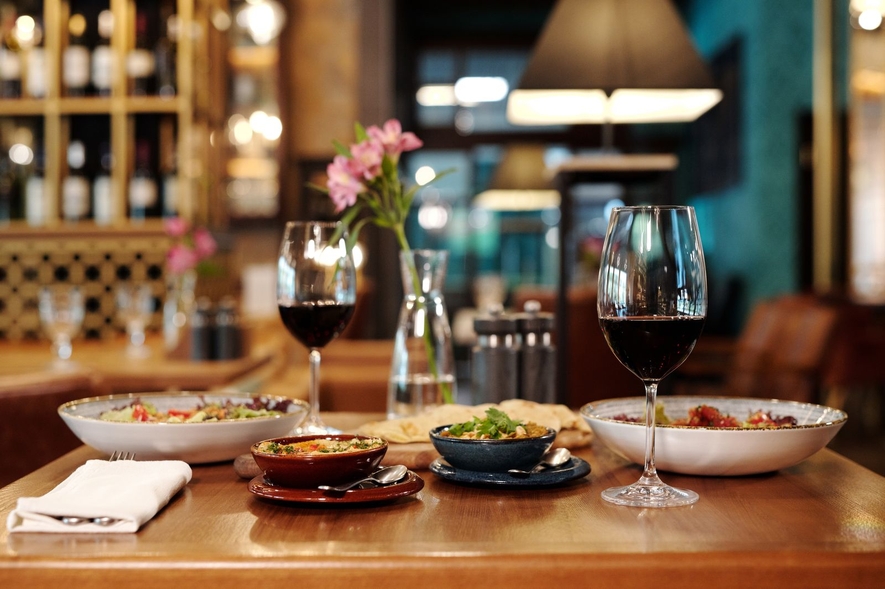

TABERNA
ELALGARROBO

a conocernos.PASAR A LA TABERNA ↓
El nombre,
bien claro.
La plaza,
también.
Hay nombres que conviene apuntar. El nuestro viene acompañado de una dirección: Plaza de la Constitución, 3, en El Bosque, Cádiz.
Esta es una primera forma de acercarte a la taberna: encontrar el camino y tener a mano un teléfono para hablar directamente con nosotros.
Para conocer la propuesta de cocina y preparar tu visita, consúltanos antes de venir.
Lo que puedes consultarLa mejor información,
de viva voz.
Una llamada para resolver los detalles de tu visita.
Qué hay en cocina
Pregunta por la carta, la oferta disponible y los precios del día.
Cuándo acercarte
Confirma el horario de apertura antes de desplazarte.
Lo que necesitas saber
Consulta ingredientes y alérgenos directamente con la taberna.
La oferta y los horarios pueden cambiar. Habla con el establecimiento para tener la información actual.
Plaza de la
Constitución,
El Bosque
Cádiz
Taberna El Algarrobo
Tu dirección, lista para abrir en el mapa.
¿Hablamos?
Al otro lado del teléfono,
Taberna El Algarrobo.